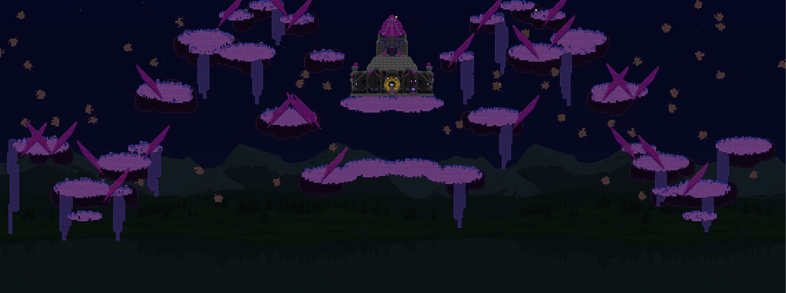
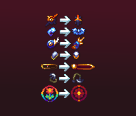

The second progress report for my Terraria content mod, the Transcendence Mod.
I'm back from burnout, and modding has gone phenomenally.
I've gotten so much done this month - finished a boss, neared the completion of Celestial Seraph, added multiple new weapons, Post-Atmospheron Dungeon,
dash rework, several resprites, vanilla changes, worldgen, shaders, etc.
The current final boss of the mod
A new Post-Moonlord worm boss fought in the Tundra biome
Improved world generation for the cosmic biome
A Post-Plantera magic ranged hybrid weapon themed after the Terrablade
A Post-Golem shield, which allows the wielder to mount a golem
Some recent resprites, not all are included
